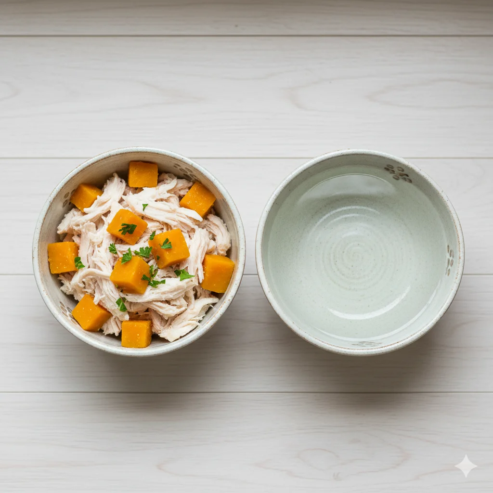

高齡犬飲食禁忌：老狗怎麼吃才健康？
隨著年齡增長，狗狗的新陳代謝率會下降約 20%。這意味著如果維持年輕時的餵食量，牠們很容易發胖；或是因消化吸收能力變差而日漸消瘦。正確的飲食調整是長壽的關鍵。
老狗飲食的三大黃金原則
1. 優質蛋白質不可少
過去觀念認為老狗要限制蛋白質以保護腎臟，但最新的獸醫研究指出，除非狗狗已被確診慢性腎臟病，否則老狗反而需要高品質的蛋白質來維持肌肉量，避免肌少症。建議選擇雞胸肉、火雞肉或魚肉等好消化的來源。
2. 低熱量、高纖維
為了避免肥胖壓迫關節，應減少脂肪攝取。同時，適量增加纖維（如南瓜、地瓜）可以促進腸胃蠕動，解決老狗常見的便秘問題。
3. 增加水分攝取
老狗的口渴機制會退化，容易脫水。如果牠不愛喝水，可以嘗試將飼料泡軟，或在食物中加入無鹽肉湯。
絕對禁止！高齡犬的飲食地雷
除了常見的巧克力、葡萄、洋蔥外，老狗更應避免：
- 高鈉食物（火腿、香腸）： 會增加心臟與腎臟負擔。
- 過硬的潔牙骨： 老狗牙齒脆弱，可能導致牙裂或吞嚥困難。
- 生冷食物： 老年犬腸胃敏感，容易引起腹瀉。
推薦的天然補給品
您可以適量在飲食中添加：
- 魚油 (Omega-3)： 保護心血管與關節，舒緩皮膚發炎。
- 益生菌： 維持腸道菌叢平衡，提升免疫力。
注意：任何飲食轉換請採用「漸進式」，花 7-10 天慢慢替換，以免造成拉肚子。